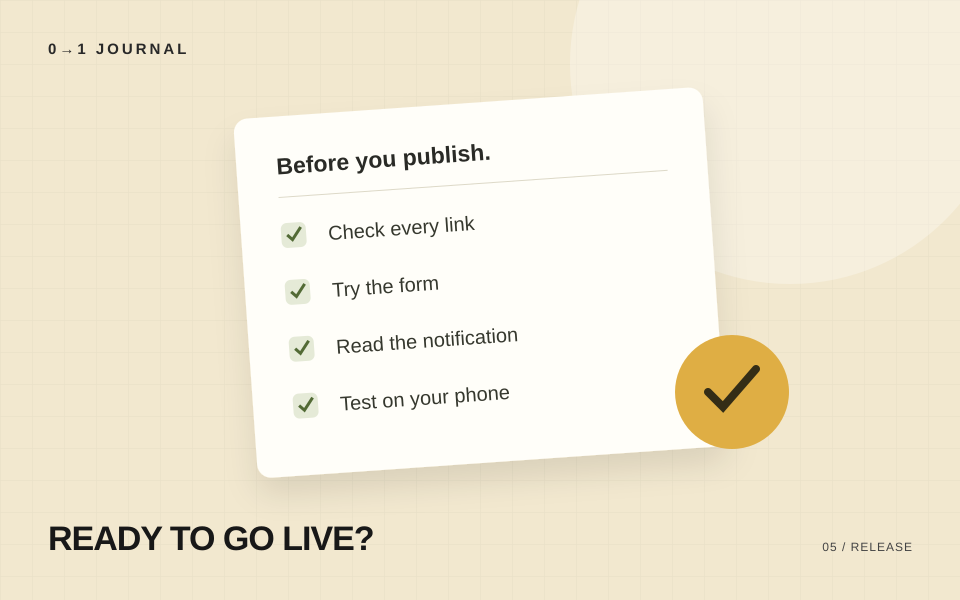

ページがきれいに表示されても、申し込みが担当者に届かなければ目的を果たせません。公開前は、利用者の操作と運営側の受信をつなげて確認します。
リンクを実際に開く
メニュー、記事カード、フッター、電話番号。リンクを一つずつ開いて、意図した場所へ移動するかを確かめます。
開発用のURLや、仮のリンク先が残っていないかも確認しましょう。ページ内リンクは、固定ヘッダーに見出しが隠れないかまで見ます。
正しい入力と、間違った入力を試す
フォームは正しく入力した場合だけでなく、名前が空欄、メールアドレスの形式が違う、同意が未チェック、といった状態も試します。
入力に問題があるとき、どこを直せばよいかが分かることが大切です。エラーのあとも、すでに入力した内容はできるだけ残します。
完了画面と通知を両方確認する
送信ボタンを押したあとは、次の3点を確認します。
- サイトに受付結果が表示される
- 担当者へ通知が届き、入力内容を読める
- 自動返信を用意している場合は、申込者にも届く
予約機能がある場合は、予定が登録されたか、日時が正しいか、招待先が正しいかも確認します。テストの実施は運営者と調整し、実際の予約と混同しない名前を使いましょう。
通信が失敗した場合も考える
通信できなかったときに、受付完了と表示してはいけません。一方、サーバーは受理したのに返答だけ届かない場合もあります。
安易に何度も送信を促すと、重複した申し込みにつながります。問い合わせ先を示し、受付状況を確認できるようにしておきます。
確認した条件を残す
いつ、どのブラウザと端末で、何を確認したかを短く記録します。修正後に同じ条件で見直せるようになります。
公開後にも、本番のURLでもう一度確認してください。設定や送信先が開発時と違うことがあります。
記事についてのお問い合わせ
← 記事一覧に戻る記載内容へのご質問や訂正のご連絡は、hello@junkbranding.comまでお願いします。